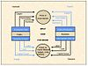

price

Definition: A price is the (usually not negative) quantity of payment or compensation expected, required, or given by one party to another in return for goods or services. In some situations, the price of production has a different name. If the product is a "good" in the commercial exchange, the payment for this product will likely be called its "price". However, if the product is "service", there will be other possible names for this product's name. For example, the graph on the bottom will show some situations A good's price is influenced by production costs, supply of the desired item, and demand for the product. A price may be determined by a monopolist or may be imposed on the firm by market conditions.
Source: Wikipedia
Wikipedia Page
Wikidata Page